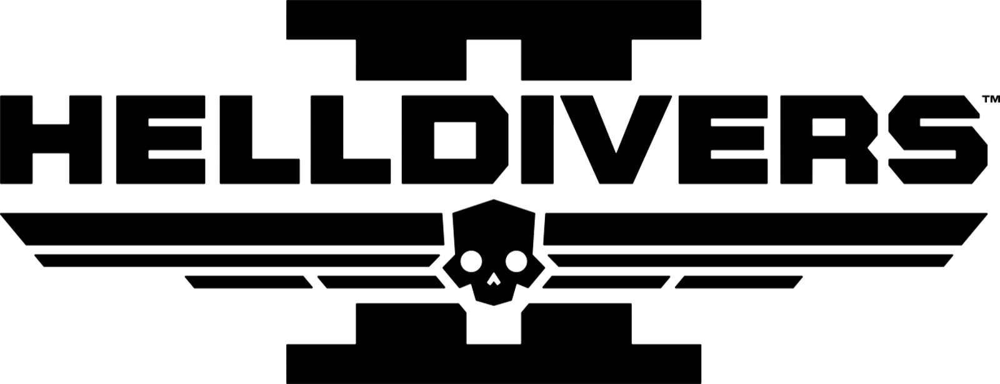

Helldivers II

| Release Date: | February 8th, 2024 |
| Genre: | Squad-Based 3rd Person Shooter |
| Developer: | Arrowhead Game Studios |
| Platform: | Playstation 5, PC |
| Details: | Steam |
Helldivers 2 is a squad-based third person shooter where a team of four descend onto a hostile planet to complete a collection of objectives while combating different varieties of bugs or robots. It's a live-service game, where the player's objectives are considered into the ongoing galactic war, resulting in planets eventually getting liberated and can move onto the next. Leading up to this game's release, I hadn't heard of the game and didn't hear much talk about it. It wasn't until recently that I heard about it from various news sites of how much of a hit it became. Talked with some friends and watched some of the trailers and it looked good enough to try it out. Little did I know, I'd play the heck out of this game. I've always been a fan of shooters, but most of them are PvP-oriented nowadays and I don't play games for their competitive aspect. Helldivers 2 is a cooperative shooter, which is much more in the style of game that I enjoy.
There's not that much of a story to this game, as it's a live-service game and not driven by a particular story, but there's a basic premise to explain the world in which the game takes part in. The player is apart of the Helldivers division of Super Earth's galactic army. Super Earth is a galactic empire that is spreading through the galacties, spreading their Managed Democracy ideology to the planets they liberate. The war in which they're fighting is against the Terminids (giant bugs) and the Automatons (rebelling robots). Helldivers are their elite squads that are sent to reclaim the planets, leading the charge for the rest of Super Earth's army. From how the game presents it, it's all a big propaganda scheme, but the game goes all in to it to the point of absurdity. It leads to a satirical story that resonates well with the gameplay loop of dropping into endless planets and destroying anything that opposes you, in the name of democracy.
Gameplay
Since there's not too much of a deep story to hook the player into, the game has to have a strong gameplay look to stay engaging, especially since it's a live-service game. The main loop of the game is upon selecting a mission from your ship, your squad drops to a selected position on the map and have a set amount of time to complete the main objective and extract. There's quite of bit of side objectives that you can complete as well, from exploring minor point of interest for equipment and currency, to destroying enemy outposts, to hidden objectives that you need to locate while exploring the map. All of this can be completed while also killing enemies and their patrols, so it's on the squad to effectively dispatch enemies, explore and complete all the objectives they can, and get out to maximize their rewards. It's an intense loop, with missions tending to last roughly 30-40 minutes if your trying to complete everything.
To aid your squads mission, each player has their own loadout that they pick out at the start of the mission. Their weapon and armor is fairly straight-forward, with different types of guns to choose from and various armor pieces giving different passive buffs. The main equipment though is their stratagems, which is a variety of "abilties" to help turn the tide of a battle. These can be offensive attacks of orbital strikes from your ship, bombs launched from fighter jets, defensive skills like turrets or gas bombs to slow enemies, to supportive weapons like grenade launcher or a railgun. These are powerful abilities and are essential towards success in any mission. Utilizing them can get really intense as you have to enter in a series of inputs to select the proper stratagem, making their usage in the heat of battle risky, but highly rewarding.
Upon collecting everything you can and extracting from the mission, you'll receive various different currencies.
- Experience for your current level, which is solely used for unlocking more stratagems that you can purchase.
- Requisition Slips which are used to purchase different stratagems that you've unlocked.
- Medals are used for unlocking new equipment, emotes, and cosmetics from the various "battle passes".
- Super Credits is the premium currency, used to buy special equipment from the superstore or premium battle passes.
- Samples of different varieties to upgrade various ship components, improving cooldown times, more ammo, or improve some skills.
Live-Service Aspect
This is the one thing of the game I really do want to touch on, as it's a touchy subject in the current environment of gaming. A lot of games have been build around being a service of sorts, encouraging players to constantly be playing, spending money for further progression, and providing a constant stream of new content. A lot of people are pushing back on these kind of games, mainly due to how poorly made most of them are and how much they push players to purchase currency to "stay ahead of the game". Helldivers 2 falls under the category of a live-service game, but they're approaching the aspects of that type of game in a much more reasonable manner.
- Super Credits, which is the currency that you can spend money on to obtain, isn't locked behind a paywall. You can find the currency from exploring during a mission, so spending money on it just speeds up the process of obtaining it. On top of that, the type of stuff you spend the currency on is balanced with the free content. It may be a different color of armor with a passive, but that same passive may be on a free set of a different look.
- While there's two battle passes right now, a free one and a premium one, they're not here for a limited time. The developer has stated that each battle pass will be around indefinitely, with more being introduced over time. So it's respecting the player's time and not urging them to finish it quickly before certain gear is lost forever.
- The game is completely online-only, which is a bummer to some, but it makes sense as to the grand scheme of the game. While your squad is completely objectives, it contributes to the community-wide effort in liberating planets. Various events occur for the entire playerbase to partake in, with our success or failure resulting in changes to the surrounding planets and the tides of the overall galactic war.
So, while it is a live-service type of game, how the developers are approaching it doesn't feel like their looking to maximize their profits off a game. It feels more that they're using the aspects of a live-service game to add onto the overall core gameplay loop that they've developed, and giving the whole playerbase goals to work towards that may not have been possible in another style.
Overall Thoughts
There isn't really that much more to talk about the game. It's very much a gameplay-focused kind of game, where it's perfectly acceptable to pick up and play a couple rounds every so often. The gameplay in which they have is intense and satisfying to play, making the player feel like a powerful machine wrecking havoc with their friends. To me, it's been really fun to play with friends that I don't have many games in common with, and the chaos that can ensure from a mission can lead to some memorable moments. It wouldn't be a game I would play on my own, as it becomes fairly monotonous, but highly recommend with a group of friends. As nothings better than dropped a cluster bomb payload at a hoard of bugs and watch your buddy run in head first shouting "For Democracy!".